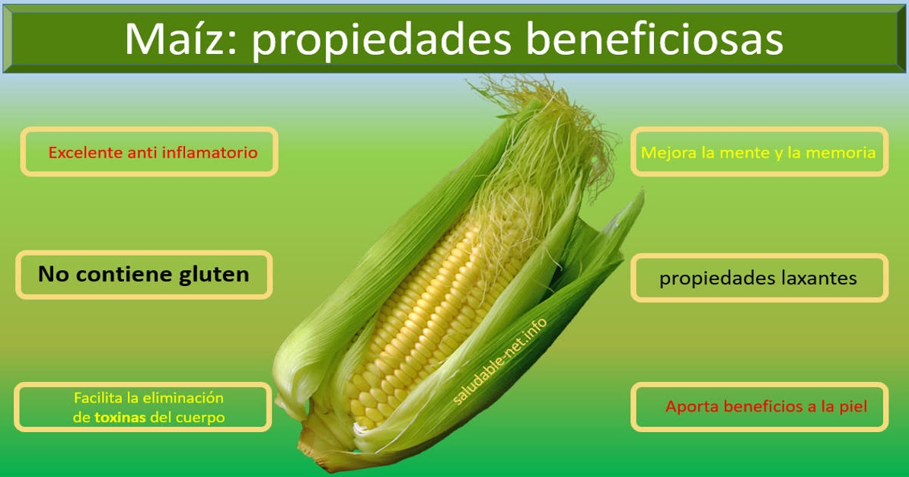

<!DOCTYPE html>
<html lang="en">
<head>
    <meta charset="UTF-8">
    <meta name="viewport" content="width=device-width, initial-scale=1.0">
    <meta name="description" content="comida barata de venezuela en madrid">
    <meta name="subject" content="comida venezolana barata">
    <meta name="meta" content="comida venezolana madrid">
    <meta name="meta" content="arepas">
    <meta name="lenguaje" content="español"> 
    <meta name="keywords" content="arepa,madrid,comida,venezolana,venezuela,barata">
    <meta name="robots" content="index,follow">
    <link rel="stylesheet" href="indexarepa.css">
    <link rel="canonical" href="https://miguelangeldiazz.github.io">
    <link rel="preconnect" href="https://fonts.googleapis.com">
    <link rel="preconnect" href="https://fonts.gstatic.com" crossorigin>
    <link href="https://fonts.googleapis.com/css2?family=Bangers&display=swap" rel="stylesheet">
    <link href="https://fonts.googleapis.com/css2?family=Gorditas:wght@400;700&display=swap" rel="stylesheet">
    <link rel="icon" href="favicon.ico" type="image/x-icon">
    <script type="application/ld+json">
        {
    "@context": "https://schema.org",
    "@type": "WebPage",
    "name": "beneficios de la harina de maiz en la salud",
    "url": "https://miguelangeldiazz.github.io/saberempanada.html",
    "description": "Cómo te beneficia la harina de maiz.",
    "inLanguage": "es",
    "keywords": "maiz, salud, beneficios",
    "about": "salud y la harina de maiz.",
    }
    </script>
    <script type="application/ld+json">
        {
        "@context": "https://schema.org",
        "@type": "BreadcrumbList",
        "itemListElement": [
    {
        "@type": "ListItem",
        "position": 1,
        "name": "Inicio",
        "item": "https://miguelangeldiazz.github.io/"
    },
    {
        "@type": "ListItem",
        "position": 2,
        "name": "Arepa Reina Pepiada",
        "item": "https://miguelangeldiazz.github.io/arepareina.html"
    },
    {
        "@type": "ListItem",
        "position": 3,
        "name": "Simbolo arepa",
        "item": "https://miguelangeldiazz.github.io/saberarepa.html"
    },
    {
        "@type": "ListItem",
        "position": 4,
        "name": "empanada de carne mechada",
        "item": "https://miguelangeldiazz.github.io/empanada.html"
    },
    {
        "@type": "ListItem",
        "position": 5,
        "name": "beneficios de la harina de maiz",
        "item": "https://miguelangeldiazz.github.io/saberempanada.html"
    }
    ]
}
    </script>
    <title>SaberArepa</title><script type="application/ld+json">
</head>
<body>
    <header>
        <nav>
            <ol>
                <li>Recetas</li>
                <li class="titulo"><a href="index.html">Que sabor pana</a></li>
                <li>Contacto</li>
            </ol>
        </nav>
    </header>
    <main>
        <nav class="breadcrumbs">
                <a href="https://miguelangeldiazz.github.io/">Inicio</a> >
                <a href="https://miguelangeldiazz.github.io/arepareina.html">Empanada de carne</a> >
                <a href="https://miguelangeldiazz.github.io/saberarepa.html">¿La harina de maiz ayuda en la salud?</a>
        </nav>
        <section>
            <article>
                <h2>¿Que beneficios?</h2>
                
                <p>Favorece la salud cardiovascular: El maíz aporta minerales y vitaminas que intervienen directamente en la síntesis de glóbulos rojos y hemoglobina, componentes esenciales para el sistema circulatorio. Otros minerales contenidos en el maíz ayudan a regular los niveles de tensión arterial alterados, sumando la presencia de fibra que reduce la absorción de grasas y carbohidratos, evitando la formación de ateromas en los vasos sanguíneos.
                Impulsa las funciones cerebrales: Gracias al contenido de vitaminas del complejo B como la tiamina, el maíz favorece la obtención de energía para el cerebro ayudando en los procesos de la memoria, la concentración y el buen estado de ánimo. 
                Combate los radicales libres: El consumo de maíz evita el envejecimiento anticipado de las células del organismo, debido a que posee en su composición nutricional componentes con acción antioxidante.
                Fortalece los huesos: El calcio y el fósforo presentes en el maíz, contribuyen al fortalecimiento de la estructura ósea del organismo, como también interviene en la salud de los dientes.Favorece la salud cardiovascular: El maíz aporta minerales y vitaminas que intervienen directamente en la síntesis de glóbulos rojos y hemoglobina, componentes esenciales para el sistema circulatorio. Otros minerales contenidos en el maíz ayudan a regular los niveles de tensión arterial alterados, sumando la presencia de fibra que reduce la absorción de grasas y carbohidratos, evitando la formación de ateromas en los vasos sanguíneos.
                Impulsa las funciones cerebrales: Gracias al contenido de vitaminas del complejo B como la tiamina, el maíz favorece la obtención de energía para el cerebro ayudando en los procesos de la memoria, la concentración y el buen estado de ánimo. 
                Combate los radicales libres: El consumo de maíz evita el envejecimiento anticipado de las células del organismo, debido a que posee en su composición nutricional componentes con acción antioxidante.
                Fortalece los huesos: El calcio y el fósforo presentes en el maíz, contribuyen al fortalecimiento de la estructura ósea del organismo, como también interviene en la salud de los dientes.</p>
            </article>
        </section>
    </main>
</body>
</html>